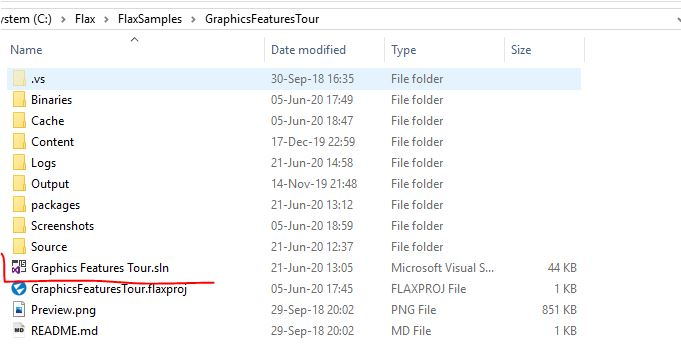
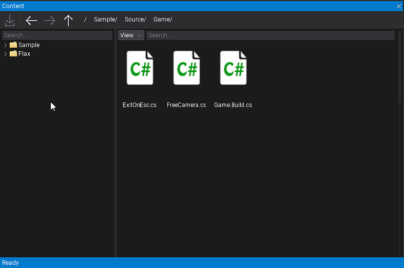
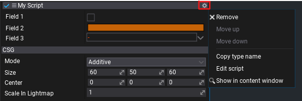
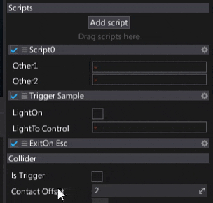

Create and use a script
Scripts in Flax are written in the C# language (source files with extension .cs).
To provide better organization in a project workspace script files are located in the Source/ directory.
In that way scripts are separated from the assets which reduces mess and makes it easier to work with project sources.
Flax Editor creates a solution file (.sln) and C# projects (.csproj) for game scripts and editor plugins.

Note
We recommend using Visual Studio for code editing with Flax Engine Tools for Visual Studio installed.
Create a script
In the Content window, Navigate to '<project_name>/Source/<game_module_name>'.
Double-click to open the script. Wait for Flax to open your IDE, which will then open the new script.
Once opened this is what the script file will look like.
using System;
using System.Collections.Generic;
using FlaxEngine;
namespace Game
{
public class MyScript : Script
{
public override void OnStart()
{
// Here you can add code that needs to be called when script is created, just before the first game update
}
public override void OnEnable()
{
// Here you can add code that needs to be called when script is enabled (eg. register for events)
}
public override void OnDisable()
{
// Here you can add code that needs to be called when script is disabled (eg. unregister from events)
}
public override void OnUpdate()
{
// Here you can add code that needs to be called every frame
}
}
}
Use a script
Scripts are attached to actors. Every actor can contain an unlimited amount of individual scripts (including multiple instances of the same script type). This means that the script's lifetime is related to that of the actor's and the scene's lifetime. For instance, if you load a scene, the scripts attached to the objects in that scene also will be loaded.
- Select an actor to add script to it (note label Drag scripts here in Scripts group in Properties window)
- Drag and drop the script into the Drag scripts here area
- Script is ready (sample script with 3 public fields)

The Flax Editor shows public script properties and fields using a dedicated group (within Scripts group). Each script group header shows a script class type name, settings button on the right and script toggle checkbox on the left. You can disable or enable the script by using this checkbox.
To remove, edit or reorder a script use the settings button which shows a popup with various options.

You can also easily pick a reference to a script or reorder it. Simply click and drag the three-bar icon button as shown on a gif below:
